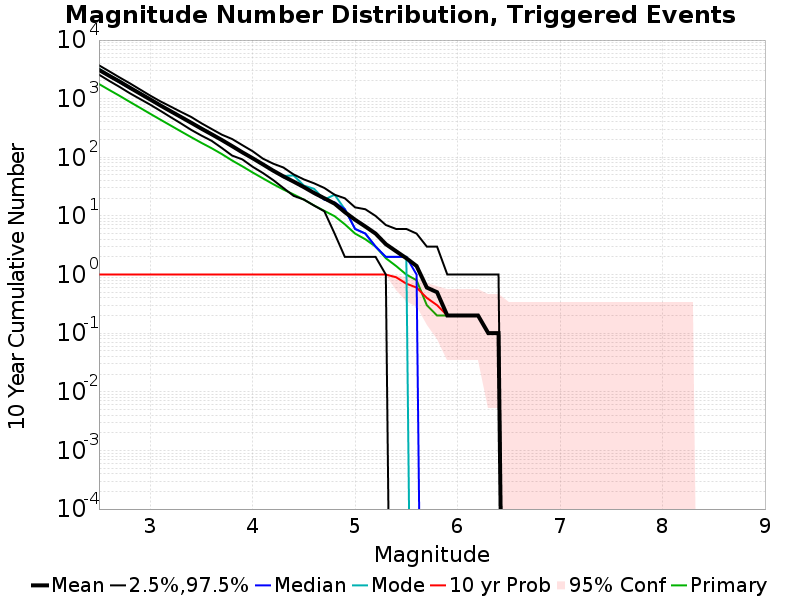

| Mojave M7 | |
|---|---|
| Num Simulations | 10 |
| Start Time | 2018/01/01 00:00:00 UTC |
| Start Time Epoch Milliseconds | 1514764800000 |
| Duration | 10 Years |
| Includes Spontaneous? | false |
| Historical Ruptures | (none) |
Legend

| Mag | Mean | 2.5 %ile | 97.5 %ile | Median | Mode | 10 yr Probability | Primary Aftershocks Mean |
|---|---|---|---|---|---|---|---|
| M≥2.5 | 3102.6 | 2572.0 | 3711.0 | 3049.0 | 3255.0 | 1.0 | 1781.1 |
| M≥2.6 | 2461.9 | 2013.0 | 2935.0 | 2413.0 | 2515.0 | 1.0 | 1409.7 |
| M≥2.7 | 1963.1 | 1593.0 | 2310.0 | 1916.0 | 2034.0 | 1.0 | 1122.6 |
| M≥2.8 | 1547.0 | 1243.0 | 1836.0 | 1514.0 | 1514.0 | 1.0 | 884.6 |
| M≥2.9 | 1225.4 | 991.0 | 1440.0 | 1227.0 | 1259.0 | 1.0 | 701.1 |
| M≥3 | 971.3 | 791.0 | 1130.0 | 979.0 | 984.0 | 1.0 | 553.0 |
| M≥3.1 | 766.5 | 621.0 | 900.0 | 761.0 | 783.0 | 1.0 | 438.8 |
| M≥3.2 | 610.9 | 484.0 | 734.0 | 621.0 | 622.0 | 1.0 | 348.6 |
| M≥3.3 | 487.9 | 379.0 | 596.0 | 491.0 | 491.0 | 1.0 | 276.9 |
| M≥3.4 | 388.7 | 294.0 | 488.0 | 393.0 | 396.0 | 1.0 | 220.6 |
| M≥3.5 | 308.4 | 235.0 | 381.0 | 306.0 | 317.0 | 1.0 | 176.5 |
| M≥3.6 | 247.1 | 191.0 | 304.0 | 248.0 | 250.0 | 1.0 | 142.9 |
| M≥3.7 | 196.9 | 144.0 | 243.0 | 194.0 | 197.0 | 1.0 | 113.4 |
| M≥3.8 | 155.2 | 107.0 | 205.0 | 154.0 | 157.0 | 1.0 | 88.2 |
| M≥3.9 | 121.5 | 92.0 | 161.0 | 119.0 | 122.0 | 1.0 | 70.1 |
| M≥4 | 96.4 | 69.0 | 127.0 | 97.0 | 97.0 | 1.0 | 55.1 |
| M≥4.1 | 75.8 | 54.0 | 95.0 | 76.0 | 77.0 | 1.0 | 43.8 |
| M≥4.2 | 59.3 | 41.0 | 78.0 | 60.0 | 60.0 | 1.0 | 34.9 |
| M≥4.3 | 47.3 | 30.0 | 67.0 | 46.0 | 48.0 | 1.0 | 28.2 |
| M≥4.4 | 38.5 | 22.0 | 51.0 | 38.0 | 49.0 | 1.0 | 23.3 |
| M≥4.5 | 31.0 | 19.0 | 42.0 | 31.0 | 33.0 | 1.0 | 19.0 |
| M≥4.6 | 24.6 | 15.0 | 36.0 | 25.0 | 29.0 | 1.0 | 15.1 |
| M≥4.7 | 20.0 | 12.0 | 30.0 | 19.0 | 19.0 | 1.0 | 12.2 |
| M≥4.8 | 16.2 | 5.0 | 23.0 | 17.0 | 23.0 | 1.0 | 9.9 |
| M≥4.9 | 11.6 | 2.0 | 20.0 | 13.0 | 13.0 | 1.0 | 7.2 |
| M≥5 | 8.6 | 2.0 | 14.0 | 6.0 | 6.0 | 1.0 | 5.0 |
| M≥5.1 | 6.6 | 2.0 | 13.0 | 5.0 | 5.0 | 1.0 | 4.0 |
| M≥5.2 | 5.0 | 2.0 | 10.0 | 3.0 | 3.0 | 1.0 | 3.0 |
| M≥5.3 | 3.3 | 1.0 | 7.0 | 2.0 | 2.0 | 1.0 | 1.9 |
| M≥5.4 | 2.5 | 0.0 | 6.0 | 2.0 | 2.0 | 0.9 | 1.4 |
| M≥5.5 | 1.9 | 0.0 | 6.0 | 2.0 | 2.0 | 0.7 | 1.0 |
| M≥5.6 | 1.4 | 0.0 | 5.0 | 1.0 | 0.0 | 0.6 | 0.8 |
| M≥5.7 | 0.6 | 0.0 | 3.0 | 0.0 | 0.0 | 0.4 | 0.3 |
| M≥5.8 | 0.5 | 0.0 | 3.0 | 0.0 | 0.0 | 0.3 | 0.2 |
| M≥5.9 | 0.2 | 0.0 | 1.0 | 0.0 | 0.0 | 0.2 | 0.2 |
| M≥6 | 0.2 | 0.0 | 1.0 | 0.0 | 0.0 | 0.2 | 0.2 |
| M≥6.1 | 0.2 | 0.0 | 1.0 | 0.0 | 0.0 | 0.2 | 0.2 |
| M≥6.2 | 0.2 | 0.0 | 1.0 | 0.0 | 0.0 | 0.2 | 0.2 |
| M≥6.3 | 0.1 | 0.0 | 1.0 | 0.0 | 0.0 | 0.1 | 0.1 |
| M≥6.4 | 0.1 | 0.0 | 1.0 | 0.0 | 0.0 | 0.1 | 0.1 |
| M≥6.5 | 0.0 | 0.0 | 0.0 | 0.0 | 0.0 | 0.0 | 0.0 |
| M≥6.6 | 0.0 | 0.0 | 0.0 | 0.0 | 0.0 | 0.0 | 0.0 |
| M≥6.7 | 0.0 | 0.0 | 0.0 | 0.0 | 0.0 | 0.0 | 0.0 |
| M≥6.8 | 0.0 | 0.0 | 0.0 | 0.0 | 0.0 | 0.0 | 0.0 |
| M≥6.9 | 0.0 | 0.0 | 0.0 | 0.0 | 0.0 | 0.0 | 0.0 |
| M≥7 | 0.0 | 0.0 | 0.0 | 0.0 | 0.0 | 0.0 | 0.0 |
| M≥7.1 | 0.0 | 0.0 | 0.0 | 0.0 | 0.0 | 0.0 | 0.0 |
| M≥7.2 | 0.0 | 0.0 | 0.0 | 0.0 | 0.0 | 0.0 | 0.0 |
| M≥7.3 | 0.0 | 0.0 | 0.0 | 0.0 | 0.0 | 0.0 | 0.0 |
| M≥7.4 | 0.0 | 0.0 | 0.0 | 0.0 | 0.0 | 0.0 | 0.0 |
| M≥7.5 | 0.0 | 0.0 | 0.0 | 0.0 | 0.0 | 0.0 | 0.0 |
| M≥7.6 | 0.0 | 0.0 | 0.0 | 0.0 | 0.0 | 0.0 | 0.0 |
| M≥7.7 | 0.0 | 0.0 | 0.0 | 0.0 | 0.0 | 0.0 | 0.0 |
| M≥7.8 | 0.0 | 0.0 | 0.0 | 0.0 | 0.0 | 0.0 | 0.0 |
| M≥7.9 | 0.0 | 0.0 | 0.0 | 0.0 | 0.0 | 0.0 | 0.0 |
| M≥8 | 0.0 | 0.0 | 0.0 | 0.0 | 0.0 | 0.0 | 0.0 |
| M≥8.1 | 0.0 | 0.0 | 0.0 | 0.0 | 0.0 | 0.0 | 0.0 |
| M≥8.2 | 0.0 | 0.0 | 0.0 | 0.0 | 0.0 | 0.0 | 0.0 |
| M≥8.3 | 0.0 | 0.0 | 0.0 | 0.0 | 0.0 | 0.0 | 0.0 |
| M≥8.4 | 0.0 | 0.0 | 0.0 | 0.0 | 0.0 | 0.0 | 0.0 |
| M≥8.5 | 0.0 | 0.0 | 0.0 | 0.0 | 0.0 | 0.0 | 0.0 |
| M≥8.6 | 0.0 | 0.0 | 0.0 | 0.0 | 0.0 | 0.0 | 0.0 |
| M≥8.7 | 0.0 | 0.0 | 0.0 | 0.0 | 0.0 | 0.0 | 0.0 |
| M≥8.8 | 0.0 | 0.0 | 0.0 | 0.0 | 0.0 | 0.0 | 0.0 |
| M≥8.9 | 0.0 | 0.0 | 0.0 | 0.0 | 0.0 | 0.0 | 0.0 |
| M≥9 | 0.0 | 0.0 | 0.0 | 0.0 | 0.0 | 0.0 | 0.0 |
| Min Mag | Triggered Ruptures (no spontaneous) | Triggered Ruptures (primary aftershocks only) |
|---|---|---|
| All Supra. Seis. | | |
| Parent Name | Triggered Mean Count | Triggered 10 Year Prob | Triggered Primary Mean Count |
|---|---|---|---|
| Fontana (Seismicity) | 0.1 | 0.1 | 0.1 |
| Min Mag | Triggered Ruptures (no spontaneous) | Triggered Ruptures (primary aftershocks only) |
|---|---|---|
| M≥2.5 |  |  |
| M≥5 |  | |
| M≥6 |  | |
| M≥7 |  |